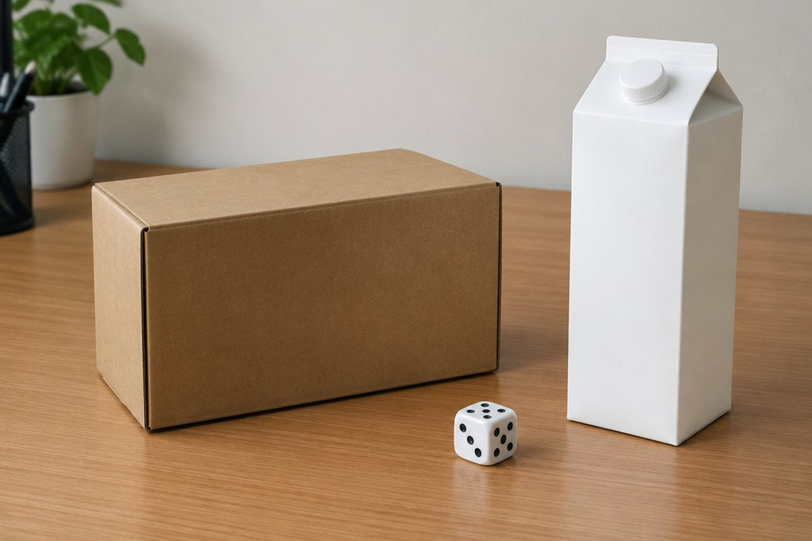

상자 모양에는 어떤 비밀이 있을까?

과자 상자, 주사위, 벽돌은 모두 비슷한 모양이에요. 면과 모서리, 꼭짓점을 세어 보며 이 입체도형의 특징을 알아봐요.
직육면체와 정육면체
직사각형 6개로 둘러싸인 도형을 직육면체라고 해요. 정사각형 6개로 둘러싸인 도형은 정육면체예요.
정사각형은 직사각형이기도 하니까 정육면체도 직육면체라고 할 수 있어요. 하지만 모든 직육면체가 정육면체는 아니에요.
과자 상자 → 직육면체, 주사위 → 정육면체
면, 모서리, 꼭짓점
선분으로 둘러싸인 부분을 면, 면과 면이 만나는 선분을 모서리, 모서리와 모서리가 만나는 점을 꼭짓점이라고 해요.
직육면체는 면 6개, 모서리 12개, 꼭짓점 8개예요. 마주 보는 두 면은 서로 평행하고 이런 면이 3쌍 있어요. 한 면과 만나는 4개의 면은 그 면과 수직이에요.
직육면체: 면 6개, 모서리 12개, 꼭짓점 8개, 평행한 면 3쌍
겨냥도와 전개도
직육면체 모양을 잘 알 수 있게 그린 그림을 겨냥도라고 해요. 보이는 모서리 9개는 실선으로, 보이지 않는 모서리 3개는 점선으로 그려요.
직육면체의 모서리를 잘라 평면 위에 펼친 그림은 전개도예요. 전개도를 접었을 때 겹치는 면이 없고, 마주 보는 면 3쌍의 모양과 크기가 같으며, 서로 맞닿는 모서리의 길이가 같아야 해요.
겨냥도: 실선 9개 + 점선 3개 = 모서리 12개
이렇게 풀어요: 모든 모서리 길이의 합
가로 4cm, 세로 3cm, 높이 2cm인 직육면체의 모든 모서리 길이의 합을 구해 볼까요? ① 길이가 같은 모서리가 4개씩 3묶음 있어요.
② 가로, 세로, 높이를 하나씩 더하면 4 + 3 + 2 = 9cm. ③ 길이가 같은 모서리가 4개씩 있으니 9 × 4 = 36cm예요. 정육면체는 모서리 12개의 길이가 모두 같아서 한 모서리가 5cm면 5 × 12 = 60cm예요.
(4 + 3 + 2) × 4 = 36cm, 정육면체 한 모서리 5cm → 5 × 12 = 60cm
핵심 낱말
- 직육면체
- 직사각형 6개로 둘러싸인 도형
- 정육면체
- 정사각형 6개로 둘러싸인 도형
- 모서리
- 면과 면이 만나는 선분
- 꼭짓점
- 모서리와 모서리가 만나는 점
- 겨냥도
- 입체도형의 모양을 알 수 있게 그린 그림
- 전개도
- 입체도형의 모서리를 잘라 평면에 펼친 그림
한 줄 정리
- 직육면체는 직사각형 6개, 정육면체는 정사각형 6개로 둘러싸여 있어요.
- 직육면체는 면 6개, 모서리 12개, 꼭짓점 8개예요.
- 겨냥도는 보이지 않는 모서리 3개를 점선으로, 전개도는 펼친 모양으로 나타내요.
학교 교육과정 연결
- [6수03-03] 직육면체와 정육면체를 이해하고, 구성 요소와 성질을 탐구하고 설명할 수 있다.
- [6수03-04] 직육면체와 정육면체의 겨냥도와 전개도를 그릴 수 있다.